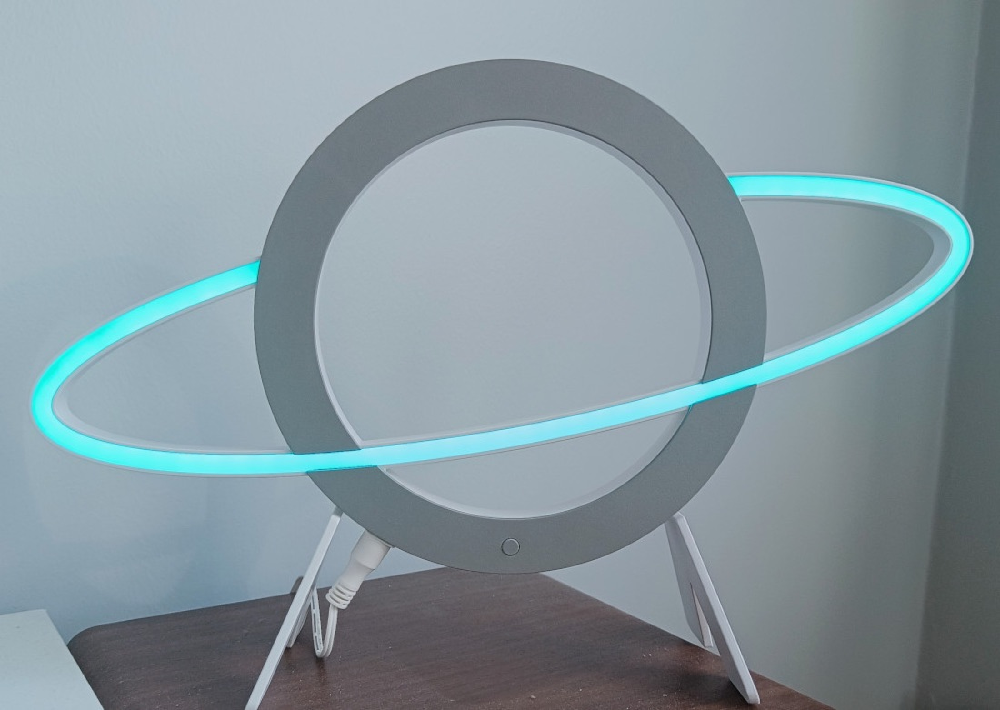
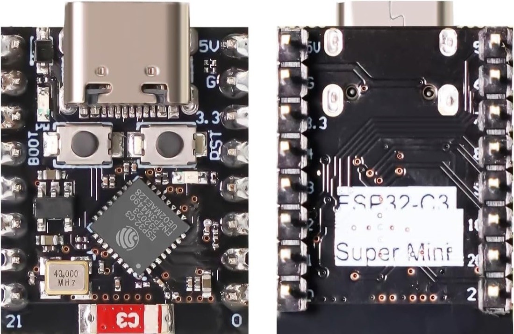
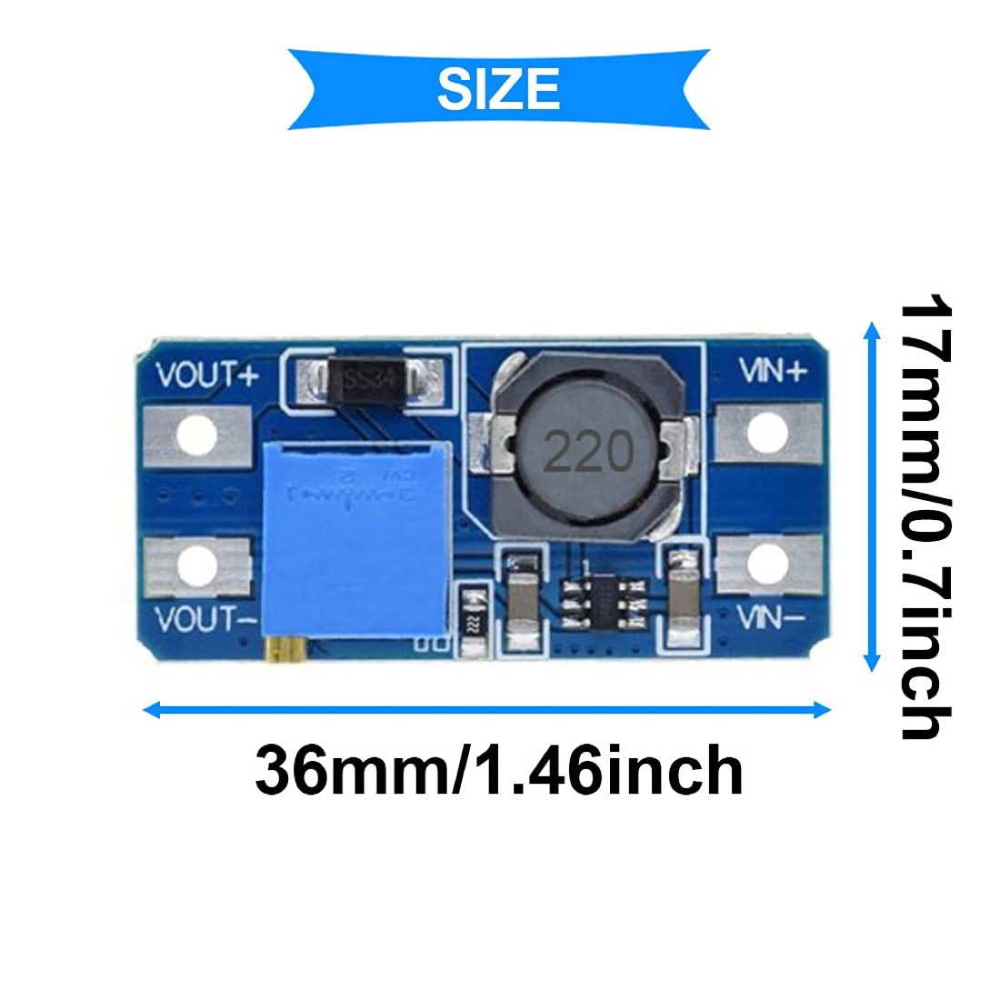
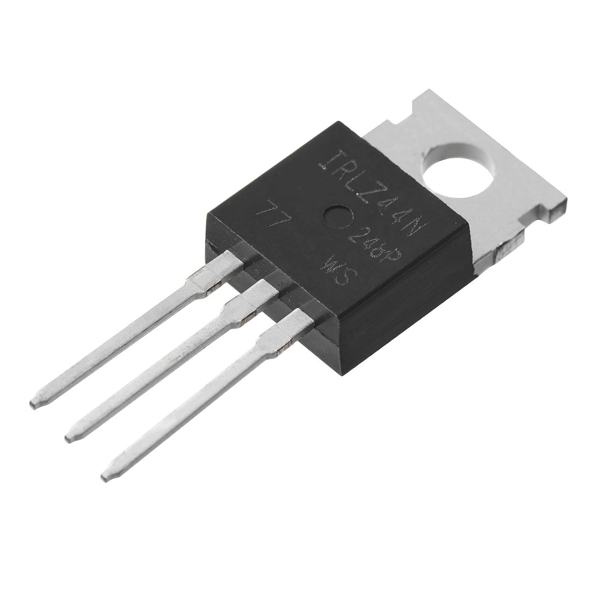
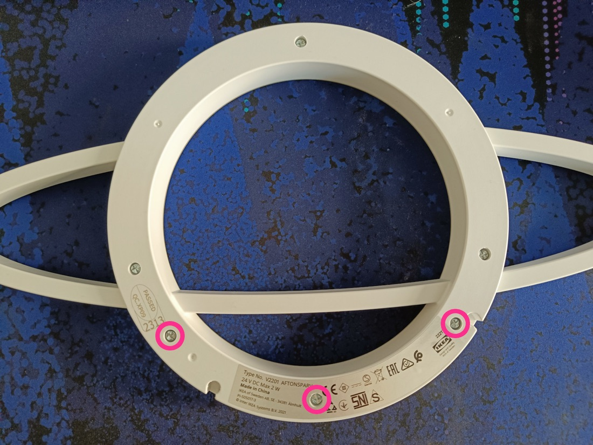
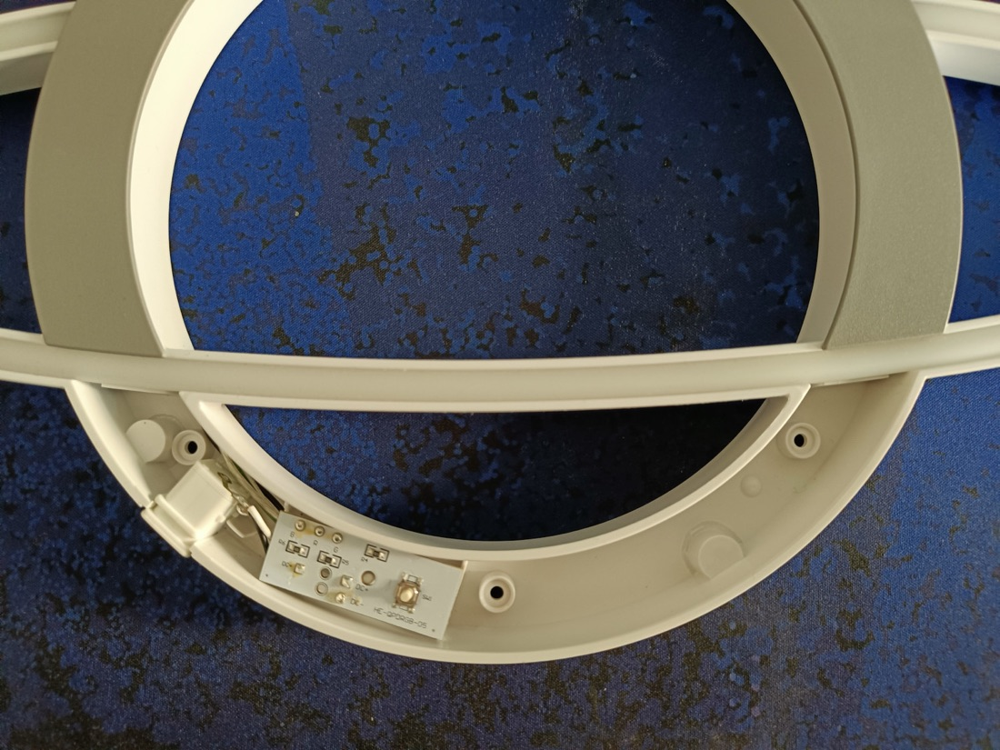
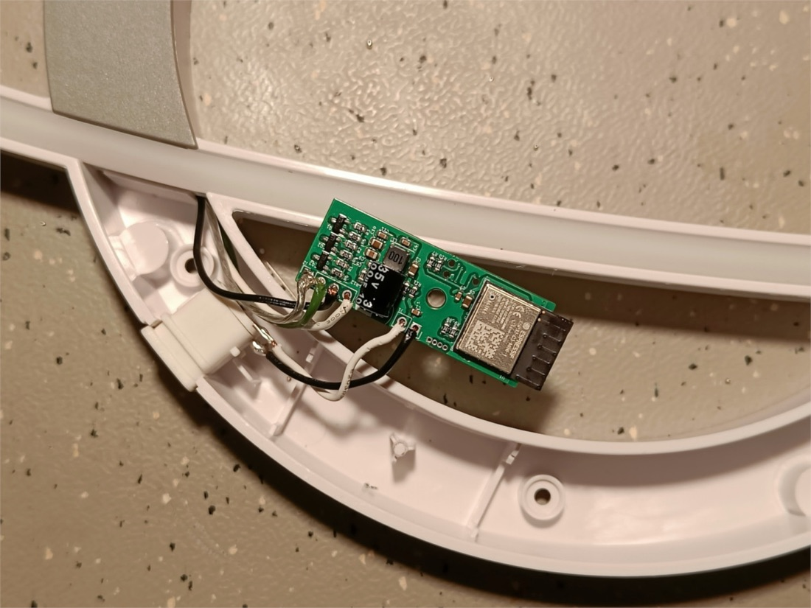
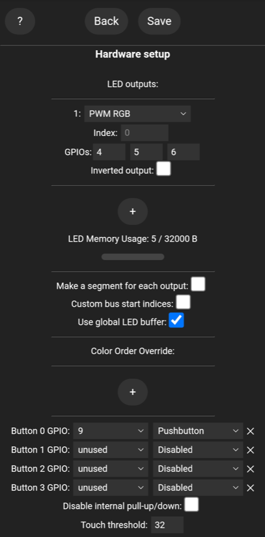
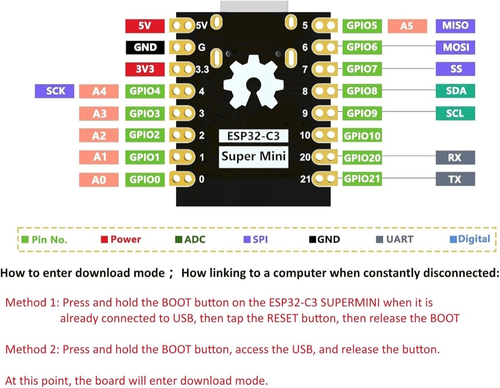
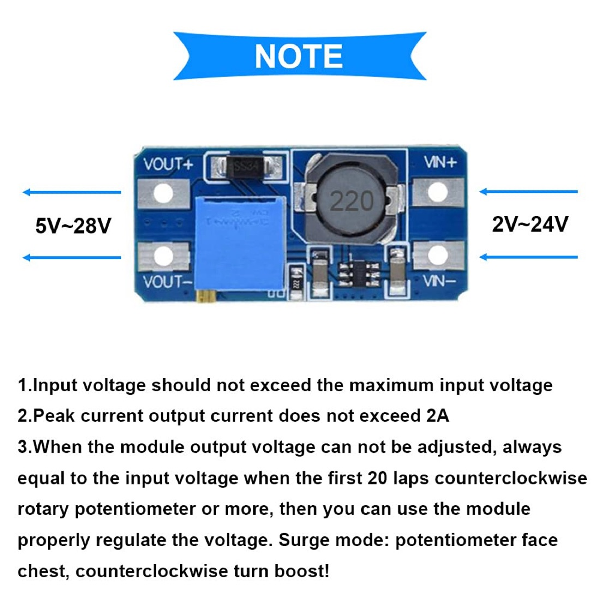

Swap the lamp's IKEA controller for an ESP32-C3 running WLED, powered from one USB charger through the lamp's own cord. You'll get app and Home Assistant control, effects and schedules.
⏱ ~2–3 hours🔌 USB 5 V → boost to 24 V3 × MOSFET PWM




| Wire | Job | Goes to (later) |
|---|---|---|
| LED white | LED + (common) | MT3608 VOUT+ (24 V) |
| LED black | Red | MOSFET 1 drain |
| LED green | Green | MOSFET 2 drain |
| LED transparent | Blue | MOSFET 3 drain |
| Cord white | Power + | 5 V rail |
| Cord black | Power − | GND rail |

The electronics have to fit in that curved channel. Compare the channel against these sizes:
| Part | Size (mm) |
|---|---|
| ESP32-C3 SuperMini | 18 × 22.5 × ~4 (no header pins) |
| MT3608 | 36 × 17 × 14 (the trim screw is the tall part) |
| IRLZ44N | 10 × 15 body, lies 4.5 thick when bent flat |

PWM RGB, GPIOs 4 5 6. Save.
| Pin | Connects to |
|---|---|
| 5V | 5 V rail (cord white) |
| G (GND) | GND rail (cord black) |
| 4 | 100 Ω → MOSFET 1 gate (red) |
| 5 | 100 Ω → MOSFET 2 gate (green) |
| 6 | 100 Ω → MOSFET 3 gate (blue) |


| MOSFET | Gate from | Drain to |
|---|---|---|
| 1 | GPIO 4 | LED black (R) |
| 2 | GPIO 5 | LED green (G) |
| 3 | GPIO 6 | LED transparent (B) |
Lamp photos and WLED screenshot: caffeinated-labs/Caffeinated-AFTONSPARV (OSHW DE000140). Part photos: the Amazon listings for the SuperMini, MT3608 and IRLZ44N. Diagrams are recreations. Full notes are in ../PLAN.md.